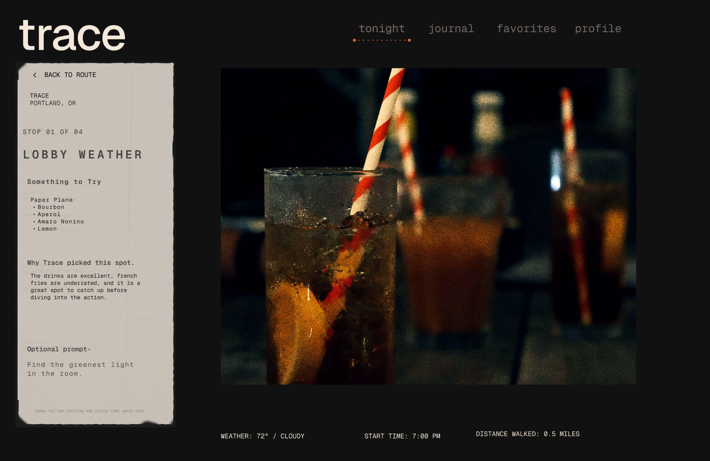
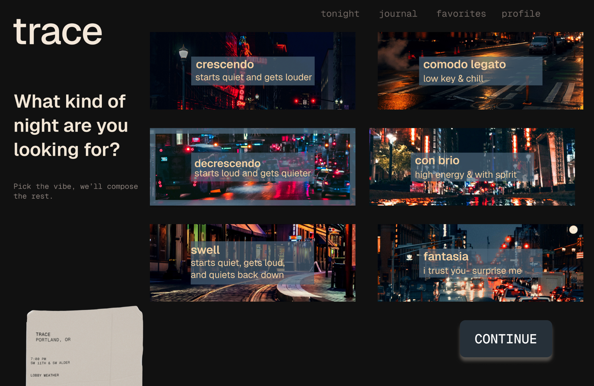
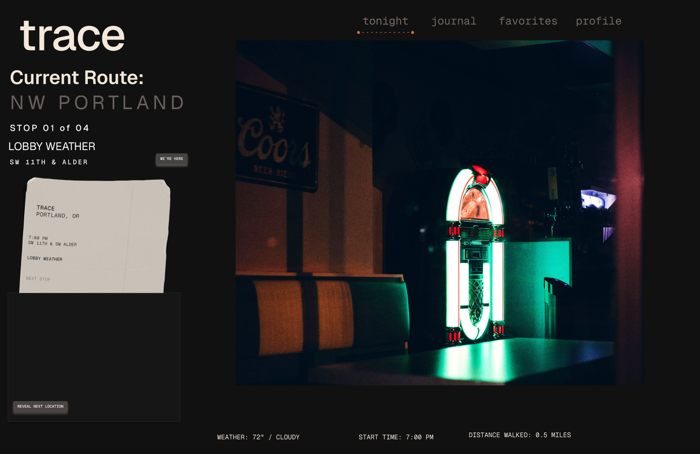

Atmospheric discovery app
Trace
An AI-guided nightlife concept designed around mood, pacing and the memory of a night.
Role
Product concept, UX direction, visual system, interface design
Focus
Atmosphere, AI route logic, emotional pacing, place discovery
Format
Concept project and high-fidelity experience design
Concept
A night out should not feel like managing a spreadsheet.
Trace explores how an AI-guided experience could help people move through a city based on mood instead of endless searching. Rather than asking users to choose from a crowded list of bars, Trace asks what kind of night they want and composes the route from there.
Design lens
Less itinerary. More atmosphere.
The interface is intentionally sparse, dark and cinematic. The goal is not to overwhelm the user with options. It is to create a guided sense of momentum: where you are, where you are going and what kind of feeling the night is building toward.
“Trace is designed for the moment between deciding to go out and knowing where the night is going.”
Interaction system
Mood becomes the route logic.
The music-inspired categories give users a more emotional way to describe intent. Crescendo, decrescendo, con brio and fantasia are not just labels. They describe pacing, energy and surprise. This lets the product feel more like a conductor than a directory.


Visual language
The receipt became the artifact.
The receipt motif gives the digital experience a physical memory. It makes each route feel like something collected, not just completed. The paper texture, monospaced details and low-light imagery help the interface feel tactile and lived-in.
UX value
The product reduces decision fatigue by narrowing the frame.
Instead of making users compare dozens of locations, Trace shifts the decision from “Where should we go?” to “What kind of night do we want?” That change matters because it reduces planning friction while still preserving a sense of spontaneity.
Reflection
Atmosphere only works when the system underneath is clear.
This project helped me explore the balance between emotional design and usable structure. The visual direction creates mood, but the experience still needs clear route logic, strong hierarchy and enough trust for users to follow the recommendation.